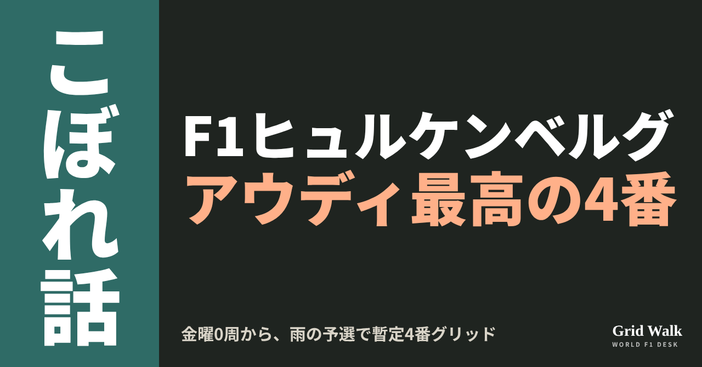
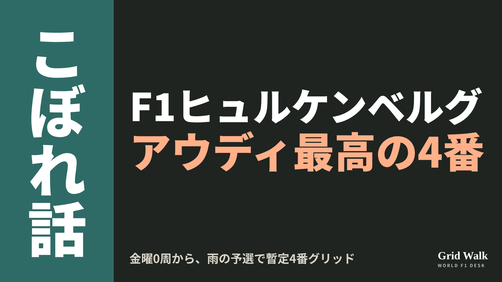
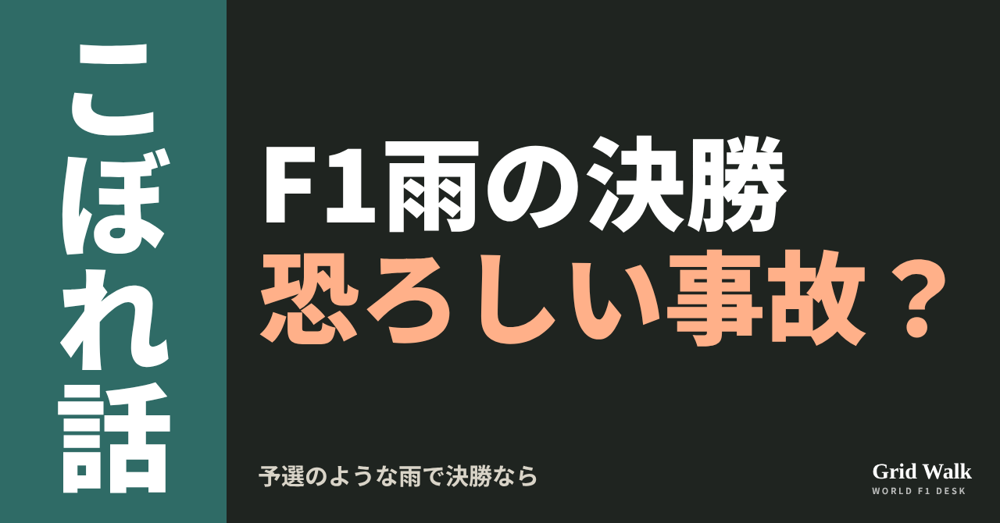
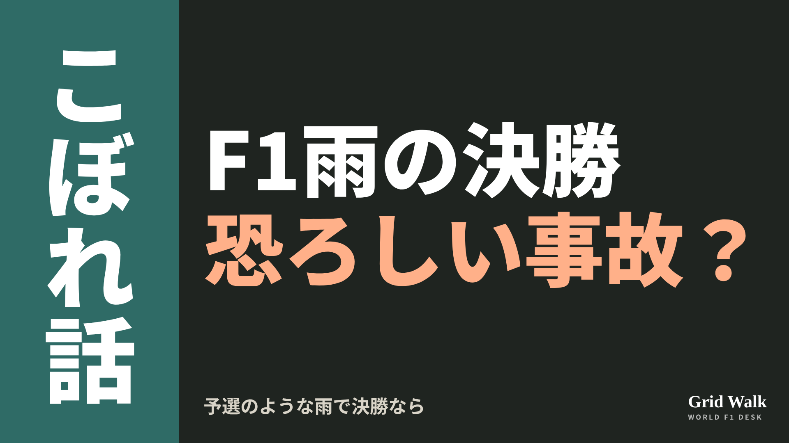
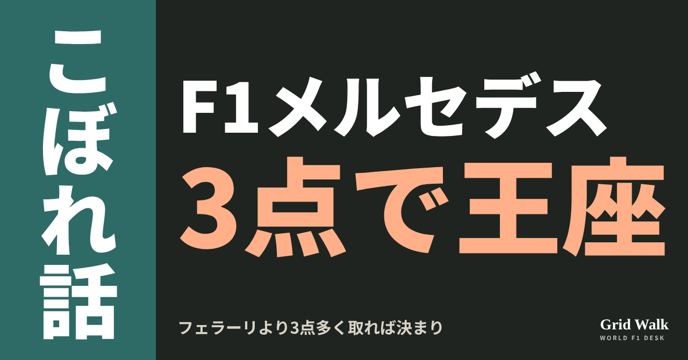
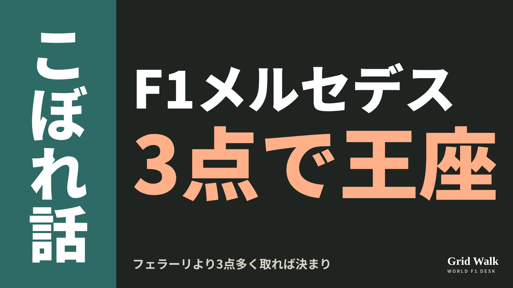
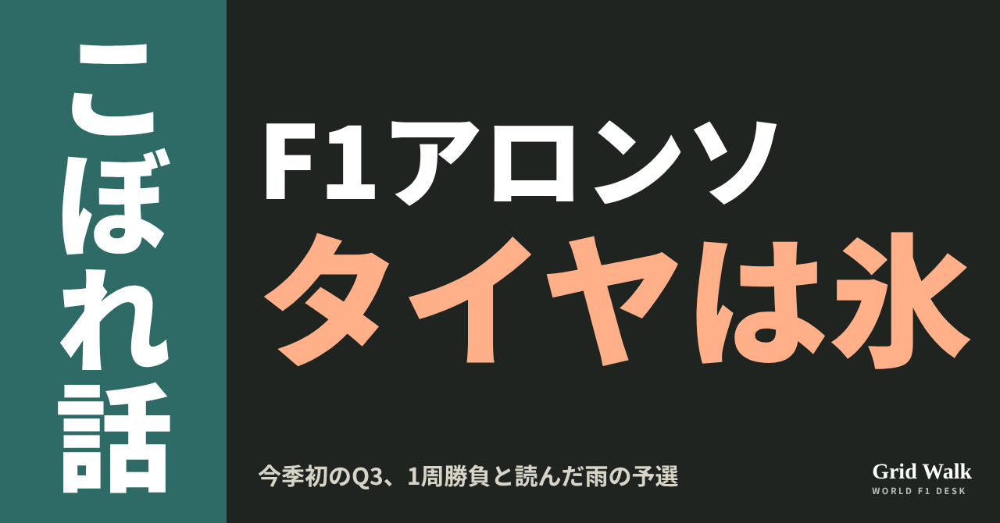
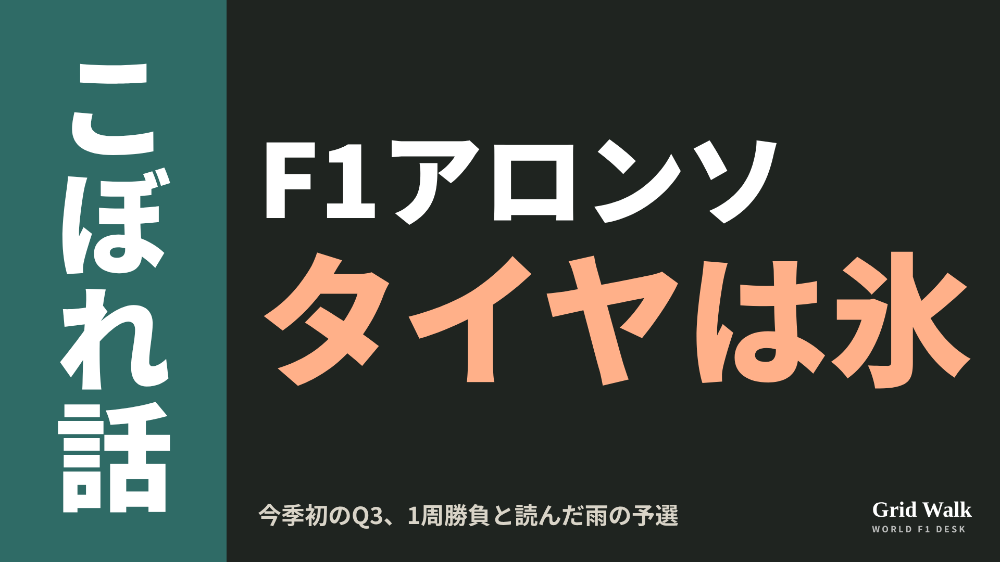
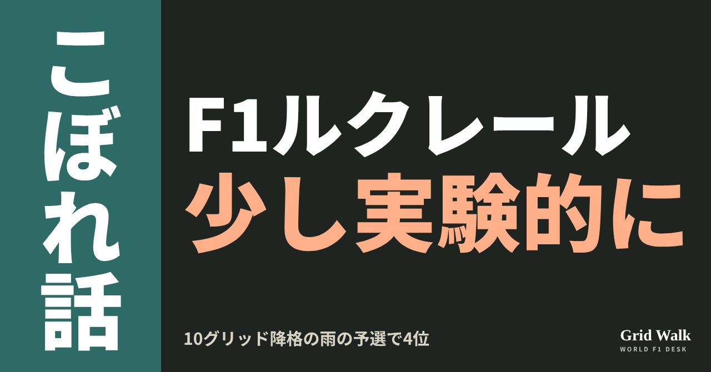
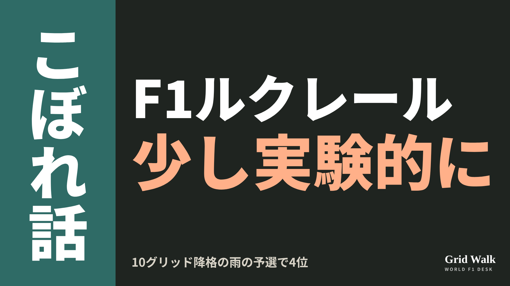

<meta charset="utf-8"><title>11/8夜のコラム note貼り付け</title>
<style>
/* one column of numbered paste steps; text steps vs image steps differ by marker */
:root{--bg:#F5F4F0;--card:#FFFFFF;--ink:#1D2321;--mute:#5F665F;--line:#DCDAD2;--btn:#1F5FBF;--btnok:#2E8B4F;--img:#E9F3EC;--imgink:#22663B;--sans:'IBM Plex Sans JP','Hiragino Sans','Noto Sans JP',sans-serif}
@media (prefers-color-scheme:dark){:root:not([data-theme="light"]){--bg:#171A19;--card:#202423;--ink:#ECEDE8;--mute:#A3AAA2;--line:#343937;--btn:#4D8BE6;--btnok:#3FA866;--img:#1E2C23;--imgink:#8FD3A6;color-scheme:dark}}
:root[data-theme="dark"]{--bg:#171A19;--card:#202423;--ink:#ECEDE8;--mute:#A3AAA2;--line:#343937;--btn:#4D8BE6;--btnok:#3FA866;--img:#1E2C23;--imgink:#8FD3A6;color-scheme:dark}
body{background:var(--bg);color:var(--ink);font-family:var(--sans);font-size:15px;line-height:1.75;padding:20px 16px 60px}
main{max-width:680px;margin:0 auto;display:grid;gap:28px}
header h1{font-size:22px;margin:0 0 6px;text-wrap:balance}
header p{margin:0;color:var(--mute);font-size:14px}
nav{display:flex;gap:8px;flex-wrap:wrap;margin-top:12px}
nav a{border:1px solid var(--line);border-radius:999px;padding:4px 14px;color:var(--ink);text-decoration:none;font-size:14px;background:var(--card)}
.part h2{font-size:18px;line-height:1.5;margin:0 0 12px;text-wrap:balance;display:flex;gap:10px;align-items:baseline;flex-wrap:wrap}
.tag{font-size:13px;background:var(--ink);color:var(--bg);border-radius:6px;padding:1px 9px}
.steps{list-style:none;margin:0;padding:0;display:grid;gap:12px}
.st{background:var(--card);border:1px solid var(--line);border-radius:12px;padding:12px;min-width:0}
.hd{display:flex;align-items:center;gap:8px;margin-bottom:8px}
.no{width:26px;height:26px;border-radius:50%;background:var(--btn);color:#fff;display:inline-flex;align-items:center;justify-content:center;font-size:13px;font-weight:700;flex:0 0 26px}
.im .no{background:var(--btnok)}
.hd em{font-style:normal;font-size:12px;background:var(--img);color:var(--imgink);border-radius:6px;padding:0 8px}
.bx{font-size:13.5px;line-height:1.7;border:1px solid var(--line);border-radius:8px;padding:8px 10px;max-height:110px;overflow:auto;overflow-wrap:anywhere}
.bx.tall{max-height:150px}.bx p{margin:0 0 6px}.bx h2{font-size:14px;margin:8px 0 4px}.bx a{color:var(--btn)}
.st img{display:block;width:100%;max-width:100%;border:1px solid var(--line);border-radius:8px}
.sub{font-size:12.5px;color:var(--mute);margin:6px 0 0}
.cp{width:100%;margin-top:8px;padding:12px;border:0;border-radius:10px;background:var(--btn);color:#fff;font:600 15px var(--sans);cursor:pointer}
.cp.ok{background:var(--btnok)}.cp.dl{background:var(--btnok)}.cp:focus-visible{outline:3px solid var(--ink);outline-offset:2px}
.xh{font-size:15px;margin:20px 0 10px}
.fb{font-size:13px;line-height:1.7;margin:8px 0 0;padding:8px 10px;border-radius:8px;background:var(--img);color:var(--imgink)}
.opts{display:grid;grid-template-columns:repeat(auto-fill,minmax(240px,1fr));gap:10px}
.opt{min-width:0}.opt img{display:block;width:100%;border:1px solid var(--line);border-radius:8px}
.ol{display:flex;align-items:center;gap:8px;margin-top:6px}.ol b{font-size:13px;flex:0 0 auto}.ol .on{font-size:12.5px;color:var(--mute);flex:1;min-width:0}.ol .cp{width:auto;flex:0 0 auto;padding:9px 14px}.ol .cp{margin:0;padding:9px}
.toast{font-size:13px;color:var(--mute);margin-top:6px}
</style>
<main><header><h1>11/8夜のコラム note貼り付け</h1><p>いま公開済みは5本です。青い番号は文章、緑は画像です。</p><nav><a href="#p1">1</a><a href="#p2">2</a><a href="#p3">3</a><a href="#p4">4</a><a href="#p5">5</a></nav></header><section class="part" id="p1"><h2><span class="tag">OFF GRID</span>金曜0周のヒュルケンベルグ、アウディ最高の暫定4番グリッド</h2><p class="sub">サイトに公開：22:20</p><ol class="steps">
<li class="st im"><div class="hd"><span class="no">1</span><b>見出し画像</b><em>画像</em></div><button class="cp dl" data-img="img/hulkenberg-audi-best-grid-20261108.png" data-name="hulkenberg-audi-best-grid-20261108_見出し画像.png">ダウンロード</button></li>
<li class="st"><div class="hd"><span class="no">2</span><b>タイトル</b></div><div class="bx" id="p1t">金曜0周のヒュルケンベルグ、アウディ最高の暫定4番グリッド</div><button class="cp" data-plain="p1t">タイトルをコピー</button></li>
<li class="st"><div class="hd"><span class="no">3</span><b>本文</b></div><div class="bx tall" id="p1r"><p>金曜日は1周も走れなかったドライバーが、土曜の雨の予選で6位に入りました。アウディのニコ・ヒュルケンベルグです。ジョージ・ラッセルとシャルル・ルクレールの降格で、暫定のスタート順では4番手。アウディがF1でつかんだ、いちばん前のスタート位置です。</p><p>ドイツの元の記事と、2010年のポールのF1公式の結果へのリンクはサイトで → <a href="https://f1gridwalk.github.io/lens/hulkenberg-audi-best-grid-20261108/?utm_source=note&amp;utm_campaign=hulkenberg-audi-best-grid-20261108">https://f1gridwalk.github.io/lens/hulkenberg-audi-best-grid-20261108/?utm_source=note&amp;utm_campaign=hulkenberg-audi-best-grid-20261108</a></p><h2>金曜は0周、予選は23周</h2><p>ドイツのMotorsport-Magazinによると、ヒュルケンベルグはFP1を新人のフレディ・スレーターに譲り、そのあとも技術的な問題で、金曜は1周も走れませんでした。</p><p>それでも雨の予選では、すべりやすい路面で何度も上位のタイムを出した、と同誌は書いています。F1公式の予選結果では、Q1のタイムは全体の5番目。予選の3セッションで23周を走り、最後は6番手でした。</p><blockquote><p>「コンディションは難しかった。簡単ではなかったけれど、うまく乗り切れてうれしい。最初の周から、車にいい感触があった」（ヒュルケンベルグ、Motorsport-Magazin／ドイツ）</p></blockquote><blockquote><p>「ここはもちろん何度も走っているから、サンパウロはよく知っている。いい感触があって車を信頼できれば、昨日走れなかったことはそれほど響かないと分かっていた。幸い、今日はそうなった」（ヒュルケンベルグ、Motorsport-Magazin／ドイツ）</p></blockquote><p>チームのレーシングディレクター、アラン・マクニッシュは、こうたたえました。</p><blockquote><p>「ニコはまたすばらしい走りを見せてくれた。雨の中での速さをもう一度示し、なぜ彼が『雨の名手』なのかを見せた」（マクニッシュ、Motorsport-Magazin／ドイツ）</p></blockquote><h2>アウディ最高と、16年前のポール</h2><p>Motorsport-Magazinによると、これまでのアウディの最高のスタート位置は、ベルギーGPでガブリエル・ボルトレートが取った8番手でした（アウディ公式のベルギーGP予選のまとめでも8番手）。同誌は、降格がなくても予選6位で記録を更新していた、と書いています。暫定のスタート順で、2列目の隣に並ぶのは、レーシングブルズのリアム・ローソン。暫定のスタート順と降格の中身は、コラム（https://f1gridwalk.github.io/lens/brazil-grid-penalties-20261108/ ）にまとめています。</p><p>F1デビューの年だった2010年のブラジルGPで、ヒュルケンベルグはこのインテルラゴスで、ウィリアムズの車でポールポジションを取りました。F1公式の結果では、Q3のタイムは1分14秒470。2番手のセバスチャン・ベッテルより約1.05秒速いタイムでした。</p><p>英GrandPrix.comによると、このときは乾いていく路面で、Q3の最後のアタックをスリックタイヤで走ってのポールでした。Motorsport-Magazinも、当時もぬれたコンディションだったと書いています。</p><p>決勝の天気について、本人はこう話しています。</p><blockquote><p>「ある天気になってほしいと願うのは、ずっと前にやめた。来たものを、そのまま受け入れるだけだ」（ヒュルケンベルグ、Motorsport-Magazin／ドイツ）</p></blockquote><h2>ハースとは4点差</h2><p>Motorsport-Magazinによると、アウディは残り4戦の時点で、コンストラクターズ7位のハースを4点差で追っています（メキシコのあとの点数は https://f1gridwalk.github.io/lens/haas-brazil-driver-20261102/ に）。</p><p>一方、地元の特別カラー（https://f1gridwalk.github.io/lens/audi-sao-paulo-livery-20261107/ ）で走るボルトレートは、Q1でクラッシュして予選22位。ほかの人の降格で、暫定のスタート順では19番手です（https://f1gridwalk.github.io/news/pt-grandepremio-bortoleto-quali-crash/ ）。</p><p><strong>金曜0周からの暫定4番グリッド。あなたは、ヒュルケンベルグのどの言葉がいちばん印象に残りましたか？</strong></p><p>━━━━━━━━━━</p><p><strong>F1 Grid Walk では、世界のF1ニュースを毎日日本語でまとめています。</strong></p><p>海外の記事の要約を、毎日載せています。</p><p><a href="https://f1gridwalk.github.io/">https://f1gridwalk.github.io/</a></p><p>ほかの海外記事も読みたい方は、F1 Grid Walkへ。</p><p><a href="https://f1gridwalk.github.io/lens/hulkenberg-audi-best-grid-20261108/">https://f1gridwalk.github.io/lens/hulkenberg-audi-best-grid-20261108/</a></p><p>━━━━━━━━━━</p><p><a href="https://www.motorsport-magazin.com/formel1/news-301151-sternstunde-im-brasilien-qualifying-huelkenberg-sorgt-fuer-neuen-audi-rekord-in-der-formel-1/">出典：Motorsport-Magazin（ドイツ）</a></p><p><a href="https://www.formula1.com/en/results/2026/races/1299/brazil/qualifying">出典：F1公式サイト（イギリス）</a></p><p><a href="https://contenthub.audif1.com/en/releases/2026-belgian-grand-prix-saturday-253/download">出典：アウディF1公式（ドイツ）</a></p><p><a href="https://www.formula1.com/en/results.html/2010/races/877/brazil/qualifying.html">出典：F1公式サイト（イギリス）</a></p><p><a href="https://www.grandprix.com/races/brazilian-gp-2010-qualifying-report-hulkenberg-takes-sensational-brazil-pole.html">出典：GrandPrix.com（イギリス）</a></p></div><button class="cp" data-rich="p1r">本文をコピー</button></li>
<li class="st"><div class="hd"><span class="no">4</span><b>ハッシュタグ</b></div><div class="bx" id="p1h">#F1 #F1jp #ヒュルケンベルグ #アウディ #サンパウロGP #インテルラゴス #予選 #F1こぼれ話 #OFFGRID</div><button class="cp" data-plain="p1h">タグをコピー</button></li>
</ol><h3 class="xh">X</h3><ol class="steps">
<li class="st im"><div class="hd"><b>X用の画像</b><em>画像</em></div><button class="cp dl" data-img="img/x_hulkenberg-audi-best-grid-20261108.png" data-name="x_hulkenberg-audi-best-grid-20261108.png">ダウンロード</button></li>
<li class="st"><div class="hd"><b>① noteをシェアするときの文</b></div><div class="bx" id="p1x0">金曜は1周も走れなかったヒュルケンベルグが、雨の予選で6位。降格で暫定4番グリッドに上がり、アウディのF1で最高のスタート位置に。舞台は2010年に初ポールを取ったインテルラゴスです #F1jp #ヒュルケンベルグ</div><button class="cp" data-plain="p1x0">コピー</button></li>
<li class="st"><div class="hd"><b>② ①への返信</b></div><div class="bx" id="p1x1">ほかの海外記事も読みたい方は、F1 Grid Walkへ。
https://f1gridwalk.github.io/lens/hulkenberg-audi-best-grid-20261108/?utm_source=x&amp;utm_campaign=hulkenberg-audi-best-grid-20261108</div><button class="cp" data-plain="p1x1">コピー</button></li>
<li class="st"><div class="hd"><b>③ ②への返信</b></div><div class="bx" id="p1x2">毎日の海外F1ニュースは、日本語でこちらにまとめています。
https://f1gridwalk.github.io/</div><button class="cp" data-plain="p1x2">コピー</button></li>
</ol></section><section class="part" id="p2"><h2><span class="tag">OFF GRID</span>ラッセル「本当に恐ろしい事故」の恐れ　予選のような雨で決勝なら</h2><p class="sub">サイトに公開：22:20</p><ol class="steps">
<li class="st im"><div class="hd"><span class="no">1</span><b>見出し画像</b><em>画像</em></div><button class="cp dl" data-img="img/wet-race-horrific-warning-20261108.png" data-name="wet-race-horrific-warning-20261108_見出し画像.png">ダウンロード</button></li>
<li class="st"><div class="hd"><span class="no">2</span><b>タイトル</b></div><div class="bx" id="p2t">ラッセル「本当に恐ろしい事故」の恐れ　予選のような雨で決勝なら</div><button class="cp" data-plain="p2t">タイトルをコピー</button></li>
<li class="st"><div class="hd"><span class="no">3</span><b>本文</b></div><div class="bx tall" id="p2r"><p>英The Raceによると、サンパウロGPの予選で、今季はじめてフルウェット（インターミディエイトより溝の深い雨用タイヤ）が本格的に使われました。ところがメルセデスのジョージ・ラッセルは、土曜のような雨が決勝で繰り返されれば、大きな事故が起きる可能性は「とても高い」と警告しています。</p><p>元の記事と、インテルラゴスの雨と雨のタイヤを読み解くDEEP GRIDへのリンクはサイトで → <a href="https://f1gridwalk.github.io/lens/wet-race-horrific-warning-20261108/?utm_source=note&amp;utm_campaign=wet-race-horrific-warning-20261108">https://f1gridwalk.github.io/lens/wet-race-horrific-warning-20261108/?utm_source=note&amp;utm_campaign=wet-race-horrific-warning-20261108</a></p><blockquote><p>「ここで雨の中を走るのは大好きだ。でも、ある時点では、もしあれがレースだったら、あの中を走るなんてありえなかった。本当に、本当に恐ろしい事故が起きる可能性が、とても、とても高いからだ」（ラッセル、The Race／イギリス）</p></blockquote><h2>セーフティカー用と呼ばれたタイヤ</h2><p>同誌によると、地面効果の車は後ろに水しぶきを大きく上げ、近くを走ると前が見えません。フルウェットが要るほど濡れたら、そもそも車は走らない。そのため、フルウェットは事実上セーフティカー用のタイヤだ、とよく言われてきたといいます。</p><p>今季は、マレーシアでフォーメーションラップに使われただけ。雨のシンガポールのスプリントも、主役はインターミディエイトでした。</p><p>今回は、遅れていた予選がようやく再開したとき、水がたまりすぎてインターミディエイトでは走れませんでした。同誌によると、フルウェットはアクアプレーニング（タイヤが水に浮く現象）を起こしにくく、温度もちょうどよく、事故の危険を減らしました。</p><h2>ステラ代表、雨では「比較的すんなり」</h2><p>マクラーレンのアンドレア・ステラ代表は、車とタイヤのどちらのおかげかは分からないとしつつ、こう話しました。</p><blockquote><p>「ドライでは、空力の規則と、タイヤの働き方のいくつかの点のせいで、26年の車はより運転が難しいと言える。でも今日のセッションは、フルウェットもインターミディエイトも、水が多いときも少ないときもあって、いちばん幅広い雨のセッションだったかもしれない。運転のしやすさで見れば、比較的すんなりいったと思う」（ステラ、The Race／イギリス）</p></blockquote><h2>予選は間を空けられる。決勝は</h2><p>最初にコースに出たキャデラックのバルテリ・ボッタスは、走り始めを「生き残り」の戦いと表しました（同誌）。ウィリアムズのカルロス・サインツは、ストレートで6速、7速でもアクアプレーニングしていたと振り返りつつ、こう話します。</p><blockquote><p>「ほかの車の近くを走ると視界もほとんどなかった。でも予選では近くを走らなくていいから、少し間を空けて見えるようにできる。それでも最初の2周はとても危なっかしかった」（サインツ、The Race／イギリス）</p></blockquote><p>The Raceは、間を空けて前を見られるのは予選だけで、前の車にできるだけ近づくのが勝負の決勝ではFIAに別のやり方が要ると書き、ラッセルの警告もこの点を指すとしています。サインツも同じ見方です。</p><blockquote><p>「（予選の）最初の2周のようだったら、レースのスタートは視界のせいでとても難しかったかもしれない。視界は基本的にゼロで、アクアプレーニングもたくさん起きていただろう」（サインツ、The Race／イギリス）</p></blockquote><p>大きな事故なく予選を終えても、レッドブルのアイザック・ハジャーはグリップ不足を訴えました。</p><blockquote><p>「正直、もっとグリップがあると思っていた。ふつうフルウェットなら全部が少し楽になる。履けば、基本的にアクアプレーニングも突っ切れる。今日はまったくそうじゃなかった。来年に向けてずっとよくならないと。こんな条件でレースをするのは、とても無理だから」（ハジャー、The Race／イギリス）</p></blockquote><p>決勝は日本時間11月9日午前2時スタートの予定です。インテルラゴスの雨の歴史と雨のタイヤの話は、DEEP GRIDの2本（https://f1gridwalk.github.io/deep/interlagos-chaos/ 、https://f1gridwalk.github.io/deep/wet-tyres-sepang/ ）で。</p><p><strong>予選では走れた雨でも、決勝なら止めるべき？　あなたなら、どこで線を引きますか？</strong></p><p>━━━━━━━━━━</p><p><strong>F1 Grid Walk では、世界のF1ニュースを毎日日本語でまとめています。</strong></p><p>海外の記事の要約を、毎日載せています。</p><p><a href="https://f1gridwalk.github.io/">https://f1gridwalk.github.io/</a></p><p>ほかの海外記事も読みたい方は、F1 Grid Walkへ。</p><p><a href="https://f1gridwalk.github.io/lens/wet-race-horrific-warning-20261108/">https://f1gridwalk.github.io/lens/wet-race-horrific-warning-20261108/</a></p><p>━━━━━━━━━━</p><p><a href="https://www.the-race.com/formula-1/why-f1-risks-horrific-incident-if-brazilian-gp-risks-are-repeated/">出典：The Race（イギリス）</a></p></div><button class="cp" data-rich="p2r">本文をコピー</button></li>
<li class="st"><div class="hd"><span class="no">4</span><b>ハッシュタグ</b></div><div class="bx" id="p2h">#F1 #F1jp #ラッセル #サインツ #ステラ #サンパウロGP #インテルラゴス #雨のレース #F1こぼれ話 #OFFGRID</div><button class="cp" data-plain="p2h">タグをコピー</button></li>
</ol><h3 class="xh">X</h3><ol class="steps">
<li class="st im"><div class="hd"><b>X用の画像</b><em>画像</em></div><button class="cp dl" data-img="img/x_wet-race-horrific-warning-20261108.png" data-name="x_wet-race-horrific-warning-20261108.png">ダウンロード</button></li>
<li class="st"><div class="hd"><b>① noteをシェアするときの文</b></div><div class="bx" id="p2x0">予選でフルウェットが今季はじめて本格的に使われました。それでもラッセルは、あのような雨で決勝を走れば大きな事故の恐れがとても高い、と警告。ドライバーたちの言葉をnoteにまとめました #F1jp #サンパウロGP</div><button class="cp" data-plain="p2x0">コピー</button></li>
<li class="st"><div class="hd"><b>② ①への返信</b></div><div class="bx" id="p2x1">ほかの海外記事も読みたい方は、F1 Grid Walkへ。
https://f1gridwalk.github.io/lens/wet-race-horrific-warning-20261108/?utm_source=x&amp;utm_campaign=wet-race-horrific-warning-20261108</div><button class="cp" data-plain="p2x1">コピー</button></li>
<li class="st"><div class="hd"><b>③ ②への返信</b></div><div class="bx" id="p2x2">毎日の海外F1ニュースは、日本語でこちらにまとめています。
https://f1gridwalk.github.io/</div><button class="cp" data-plain="p2x2">コピー</button></li>
</ol></section><section class="part" id="p3"><h2><span class="tag">OFF GRID</span>メルセデス、サンパウロでフェラーリより3点以上なら9度目のチーム王座</h2><p class="sub">サイトに公開：22:20</p><ol class="steps">
<li class="st im"><div class="hd"><span class="no">1</span><b>見出し画像</b><em>画像</em></div><button class="cp dl" data-img="img/mercedes-constructors-title-conditions-20261108.png" data-name="mercedes-constructors-title-conditions-20261108_見出し画像.png">ダウンロード</button></li>
<li class="st"><div class="hd"><span class="no">2</span><b>タイトル</b></div><div class="bx" id="p3t">メルセデス、サンパウロでフェラーリより3点以上なら9度目のチーム王座</div><button class="cp" data-plain="p3t">タイトルをコピー</button></li>
<li class="st"><div class="hd"><span class="no">3</span><b>本文</b></div><div class="bx tall" id="p3r"><p>日本時間9日午前2時に始まるサンパウロGPの決勝で、メルセデスのチームの王座（コンストラクターズ選手権）が決まるかもしれません。条件は、このレースで2台の合計がフェラーリの2台の合計より3点以上多いこと。決まれば9回目です。ドイツのMotorsport-Magazinが示したこの条件を、F1公式の数字と規則で確かめました。</p><p>計算に使ったF1公式の数字と規則、ドイツの元の記事へのリンクはサイトで → <a href="https://f1gridwalk.github.io/lens/mercedes-constructors-title-conditions-20261108/?utm_source=note&amp;utm_campaign=mercedes-constructors-title-conditions-20261108">https://f1gridwalk.github.io/lens/mercedes-constructors-title-conditions-20261108/?utm_source=note&amp;utm_campaign=mercedes-constructors-title-conditions-20261108</a></p><h2>126点差と、残りの最大129点</h2><p>F1公式サイトでは、メルセデスが630点、フェラーリが504点で、差は126点です。決勝の点は1位25点、2位18点と続き、10位の1点まで。最速ラップの1点は2025年になくなりました（F1公式）。1チームが1戦で取れる最大は、1位と2位を合わせた43点です。</p><p>今季のスプリントは10月のシンガポールで終わっています（FIA）。ブラジルのあとは、現時点の予定ではラスベガス、カタール、アブダビの3戦（F1公式のカレンダー）。43点×3戦で、残りの最大は129点です。</p><p>ブラジルのあとの差が129点以上なら、フェラーリが残り3戦すべて1-2でも追いつけません。ちょうど129点で並んだときは、FIAのF1規則で優勝回数の多いほうが上。今季19戦の優勝はメルセデス12回、フェラーリ2回（F1公式の結果）で、フェラーリが残りを全部勝っても6回なので、メルセデスが上です。ブラジルで2点多いだけ（差128点）なら、フェラーリが3戦すべて1-2でメルセデスが無得点のとき、フェラーリが1点上回ります。だから3点がちょうどの境目です（編集部の計算）。Motorsport-Magazinも、同じ3点と、優勝回数の差を挙げています。各戦のあとの条件はDEEP（https://f1gridwalk.github.io/deep/second-place-fight-2026/ ）で。</p><h2>決まる形、決まらない形</h2><p>見るのは順位ではなく、2台ずつの合計の差です（例は編集部の計算）。</p><p>メルセデスが1-2（43点）なら、フェラーリの2台が何位でも決まり。フェラーリは多くても3位と4位の27点です。</p><p>メルセデスが2位と5位（28点）なら、フェラーリの2台の合計が25点以下で決まり。フェラーリが優勝して、もう1台が無得点なら25点で、差は3点です。ただし、もう1台が10位の1点でも取れば26点で差は2点、3位なら40点で逆転され、どちらも持ち越しです。</p><p>メルセデスが3位と4位（27点）なら、フェラーリの合計が24点以下で決まり。フェラーリが優勝すれば、もう1台が無得点でも25点で、差は2点。持ち越しです。</p><h2>暫定のスタート順と、計算の前提</h2><p>暫定のスタート順では、メルセデスはアンドレア・キミ・アントネッリが2番手、予選2番手のジョージ・ラッセルは5グリッド降格で7番手。フェラーリは2台とも降格で、シャルル・ルクレールが14番手、ルイス・ハミルトンが20番手です。降格の中身はコラム（https://f1gridwalk.github.io/lens/brazil-grid-penalties-20261108/ ）で。</p><p>この計算は、残りのレースが予定どおり行われるのが前提です。Motorsport-Magazinも残り3戦を「現時点では」と書いています。カタールとアブダビには、中止のときの予備として12月のイモラの案があります（https://f1gridwalk.github.io/lens/finale-imola-standby-20261105/ ）。レースの数が変われば、残りの最大点も条件も変わります。中止のときの点の扱いはDEEP（https://f1gridwalk.github.io/deep/cancelled-races-title/ ）で読めます。</p><p>同誌によると、3位のレッドブルは248点差で、もう届きません。メルセデスはこれまで、2014年から2021年の8連覇で、8回チームの王座を取っています（F1公式）。9回目なら、2021年以来の王座です。Motorsport-Magazinの記事の要約は https://f1gridwalk.github.io/news/de-motorsportmagazin-mercedes-constructors-title-scenarios/ にあります。</p><p><strong>チームの王座が決まるかもしれない決勝。あなたはライブで見て確かめますか、それとも朝に結果で知りますか？</strong></p><p>━━━━━━━━━━</p><p><strong>F1 Grid Walk では、世界のF1ニュースを毎日日本語でまとめています。</strong></p><p>海外の記事の要約を、毎日載せています。</p><p><a href="https://f1gridwalk.github.io/">https://f1gridwalk.github.io/</a></p><p>ほかの海外記事も読みたい方は、F1 Grid Walkへ。</p><p><a href="https://f1gridwalk.github.io/lens/mercedes-constructors-title-conditions-20261108/">https://f1gridwalk.github.io/lens/mercedes-constructors-title-conditions-20261108/</a></p><p>━━━━━━━━━━</p><p><a href="https://www.motorsport-magazin.com/formel1/news-301126-neunter-f1-titel-wie-wird-mercedes-heute-in-so-paulo-konstrukteursweltmeister/">出典：Motorsport-Magazin（ドイツ）</a></p><p><a href="https://www.formula1.com/en/teams/mercedes">出典：F1公式サイト（イギリス）</a></p><p><a href="https://www.formula1.com/en/teams/ferrari">出典：F1公式サイト（イギリス）</a></p><p><a href="https://www.formula1.com/en/results/2026/races">出典：F1公式サイト（イギリス）</a></p><p><a href="https://www.formula1.com/en/racing/2026">出典：F1公式サイト（イギリス）</a></p><p><a href="https://www.fia.com/news/fia-and-formula-1-announce-2026-sprint-calendar">出典：FIA（フランス）</a></p><p><a href="https://www.formula1.com/en/latest/article/the-beginners-guide-to-the-f1-constructors-championship.66nTfWSqrUYv3bnbosPkHV">出典：F1公式サイト（イギリス）</a></p><p><a href="https://www.formula1.com/en/latest/article/7-rule-changes-you-need-to-know-for-the-2025-f1-season.pgdSMDnDyv1aJUgtcKPp6">出典：F1公式サイト（イギリス）</a></p><p><a href="https://www.fia.com/system/files/documents/fia_2026_f1_regulations_-_section_a_general_provisions_-_iss_02_-_2026-02-27.pdf">出典：FIA（国際）</a></p></div><button class="cp" data-rich="p3r">本文をコピー</button></li>
<li class="st"><div class="hd"><span class="no">4</span><b>ハッシュタグ</b></div><div class="bx" id="p3h">#F1 #F1jp #メルセデス #フェラーリ #コンストラクターズ #サンパウロGP #インテルラゴス #F1タイトル争い #F1こぼれ話 #OFFGRID</div><button class="cp" data-plain="p3h">タグをコピー</button></li>
</ol><h3 class="xh">X</h3><ol class="steps">
<li class="st im"><div class="hd"><b>X用の画像</b><em>画像</em></div><button class="cp dl" data-img="img/x_mercedes-constructors-title-conditions-20261108.png" data-name="x_mercedes-constructors-title-conditions-20261108.png">ダウンロード</button></li>
<li class="st"><div class="hd"><b>① noteをシェアするときの文</b></div><div class="bx" id="p3x0">メルセデスのチーム王座は、サンパウロGPでフェラーリの2台の合計より3点以上多く取れば決まり。決まる形と持ち越しになる形をnoteで並べました #F1jp #メルセデス</div><button class="cp" data-plain="p3x0">コピー</button></li>
<li class="st"><div class="hd"><b>② ①への返信</b></div><div class="bx" id="p3x1">ほかの海外記事も読みたい方は、F1 Grid Walkへ。
https://f1gridwalk.github.io/lens/mercedes-constructors-title-conditions-20261108/?utm_source=x&amp;utm_campaign=mercedes-constructors-title-conditions-20261108</div><button class="cp" data-plain="p3x1">コピー</button></li>
<li class="st"><div class="hd"><b>③ ②への返信</b></div><div class="bx" id="p3x2">毎日の海外F1ニュースは、日本語でこちらにまとめています。
https://f1gridwalk.github.io/</div><button class="cp" data-plain="p3x2">コピー</button></li>
</ol></section><section class="part" id="p4"><h2><span class="tag">OFF GRID</span>アロンソ、今季初のQ3は「タイヤが氷のよう」　1周勝負と読んだ雨の予選</h2><p class="sub">サイトに公開：22:20</p><ol class="steps">
<li class="st im"><div class="hd"><span class="no">1</span><b>見出し画像</b><em>画像</em></div><button class="cp dl" data-img="img/alonso-q3-cold-tyres-20261108.png" data-name="alonso-q3-cold-tyres-20261108_見出し画像.png">ダウンロード</button></li>
<li class="st"><div class="hd"><span class="no">2</span><b>タイトル</b></div><div class="bx" id="p4t">アロンソ、今季初のQ3は「タイヤが氷のよう」　1周勝負と読んだ雨の予選</div><button class="cp" data-plain="p4t">タイトルをコピー</button></li>
<li class="st"><div class="hd"><span class="no">3</span><b>本文</b></div><div class="bx tall" id="p4r"><p>サンパウロGPの雨の予選で、アストンマーティンのフェルナンド・アロンソが今季はじめてQ3に進みました。Q3では誰よりも先にコースへ出ましたが、結果は9位。1周目はタイヤが「氷のように冷たく」、2回目のアタックではエネルギーが残っていなかったそうです。ドイツのMotorsport-Totalが11月8日、アロンソがSkyに話した内容を伝えました。</p><p>元の記事へのリンクと、グリッド降格のまとめコラムへの案内はサイトで → <a href="https://f1gridwalk.github.io/lens/alonso-q3-cold-tyres-20261108/?utm_source=note&amp;utm_campaign=alonso-q3-cold-tyres-20261108">https://f1gridwalk.github.io/lens/alonso-q3-cold-tyres-20261108/?utm_source=note&amp;utm_campaign=alonso-q3-cold-tyres-20261108</a></p><h2>いちばんに出て、強い雨に賭けた</h2><p>F1公式によると、Q3は強い雨への警戒が出ていて、序盤の周回が大事になりそうでした。アロンソはいちばん最初にコースに入り、インターミディエイトで1分30秒311を出しました。結果にがっかりしたかについては、アロンソは「はい、もちろん」と認めています（Motorsport-Total）。</p><blockquote><p>「いちばん先に準備していて、こう考えていました。雨が強くなれば、トップ4かトップ5に入るチャンスになるかもしれない、と。でも結局、雨は期待したほど強くなりませんでした。天気は十分に落ち着いていて、全員がタイムを計る周回を2周走れました」（アロンソ、Sky／Motorsport-Total・ドイツ）</p></blockquote><p>最後のアタックもうまくいきませんでした。</p><blockquote><p>「うまくまとめられませんでした。1周目はタイヤが氷のように冷たくて、グリップがまったくありませんでした。2回目は、もう使えるエネルギーが残っていませんでした。予選は1周だけになると思って、1周目で使いすぎていたからです。結局、どこにも届かないところで終わってしまいました」（アロンソ、Sky／Motorsport-Total・ドイツ）</p></blockquote><p>ポールのランド・ノリス（マクラーレン）の1分27秒470とは約2.8秒差でした（F1公式）。それでも、上位の車のグリッド降格で、暫定のスタート順ではアロンソは8番グリッドに上がります。降格の一覧はコラム（https://f1gridwalk.github.io/lens/brazil-grid-penalties-20261108/ ）にまとめています。</p><h2>Q2は「やってみる価値があった」</h2><p>Q3に進めたのは、Q2の賭けが当たったからでした。記事によると、アストンマーティンはQ2で、フルウェットからインターミディエイトにいちばん先に替えたチームでした。</p><blockquote><p>「簡単ではありませんでした。でも、フルウェットではもう限界まで出し切ったと感じていました。9番手にいて、そのまま続けていたら、たぶんQ3には行けなかった。だから少しリスクを取るほうがよかったんです。うまくいけばQ3、だめでも、どのみちフルウェットのままなら落ちていた。だから、やってみる価値がありました」（アロンソ、Sky／Motorsport-Total・ドイツ）</p></blockquote><p>アロンソはQ2を7番手で通りました。Q1でも一時はトップタイムでした（F1公式）。</p><h2>乾いた路面では18位</h2><p>乾いた路面で走った3回目のフリー走行では、アロンソは18位でした（Motorsport-Total）。同誌は、アストンマーティンは乾いた路面より雨のほうが少し戦える、と書いています。アロンソも決勝は雨を望んでいます。</p><blockquote><p>「雨のほうがチャンスはあると思います。雨だと、ちょっとしたばかなミスでリタイアになることもあります。でもポイントを取るチャンスもある。シーズンのこの時期なら、そのリスクを取りたい。この週末、乾いた路面では思っていたより少し苦しんでいます。だから、そう、日曜は雨のほうがいいですね」（アロンソ、Sky／Motorsport-Total・ドイツ）</p></blockquote><p>記事の要約はサイトのニュース（https://f1gridwalk.github.io/news/de-motorsporttotal-alonso-q3-cold-tyres-no-energy/ ）にもあります。</p><p>編集部としては、Q2の読みは当たり、最後は本人の「1周だけ」という読みが外れたところが、雨の予選らしいと見ています。</p><p><strong>冷たいタイヤと、1周勝負の読み違い。あなたなら、Q3の1周目をどう走りますか？</strong></p><p>━━━━━━━━━━</p><p><strong>F1 Grid Walk では、世界のF1ニュースを毎日日本語でまとめています。</strong></p><p>海外の記事の要約を、毎日載せています。</p><p><a href="https://f1gridwalk.github.io/">https://f1gridwalk.github.io/</a></p><p>ほかの海外記事も読みたい方は、F1 Grid Walkへ。</p><p><a href="https://f1gridwalk.github.io/lens/alonso-q3-cold-tyres-20261108/">https://f1gridwalk.github.io/lens/alonso-q3-cold-tyres-20261108/</a></p><p>━━━━━━━━━━</p><p><a href="https://www.motorsport-total.com/formel-1/news/kalte-reifen-und-keine-energie-darum-gabs-keine-alonso-sensation-in-q3-26110807">出典：Motorsport-Total.com（ドイツ）</a></p><p><a href="https://www.formula1.com/en/results/2026/races/1299/brazil/qualifying">出典：Formula 1 公式（イギリス）</a></p></div><button class="cp" data-rich="p4r">本文をコピー</button></li>
<li class="st"><div class="hd"><span class="no">4</span><b>ハッシュタグ</b></div><div class="bx" id="p4h">#F1 #F1jp #アロンソ #アストンマーティン #サンパウロGP #インテルラゴス #F1予選 #F1こぼれ話 #OFFGRID</div><button class="cp" data-plain="p4h">タグをコピー</button></li>
</ol><h3 class="xh">X</h3><ol class="steps">
<li class="st im"><div class="hd"><b>X用の画像</b><em>画像</em></div><button class="cp dl" data-img="img/x_alonso-q3-cold-tyres-20261108.png" data-name="x_alonso-q3-cold-tyres-20261108.png">ダウンロード</button></li>
<li class="st"><div class="hd"><b>① noteをシェアするときの文</b></div><div class="bx" id="p4x0">アロンソが今季はじめてQ3へ。いちばんにコースへ出て強い雨に賭けましたが、タイヤは冷たく、エネルギーも残らず9位。決勝は「雨のほうがいい」。noteにまとめました #F1jp #アロンソ</div><button class="cp" data-plain="p4x0">コピー</button></li>
<li class="st"><div class="hd"><b>② ①への返信</b></div><div class="bx" id="p4x1">ほかの海外記事も読みたい方は、F1 Grid Walkへ。
https://f1gridwalk.github.io/lens/alonso-q3-cold-tyres-20261108/?utm_source=x&amp;utm_campaign=alonso-q3-cold-tyres-20261108</div><button class="cp" data-plain="p4x1">コピー</button></li>
<li class="st"><div class="hd"><b>③ ②への返信</b></div><div class="bx" id="p4x2">毎日の海外F1ニュースは、日本語でこちらにまとめています。
https://f1gridwalk.github.io/</div><button class="cp" data-plain="p4x2">コピー</button></li>
</ol></section><section class="part" id="p5"><h2><span class="tag">OFF GRID</span>ルクレール「少し実験的にできた」　降格の雨の予選で4位</h2><p class="sub">サイトに公開：22:20</p><ol class="steps">
<li class="st im"><div class="hd"><span class="no">1</span><b>見出し画像</b><em>画像</em></div><button class="cp dl" data-img="img/leclerc-wet-experiment-20261108.png" data-name="leclerc-wet-experiment-20261108_見出し画像.png">ダウンロード</button></li>
<li class="st"><div class="hd"><span class="no">2</span><b>タイトル</b></div><div class="bx" id="p5t">ルクレール「少し実験的にできた」　降格の雨の予選で4位</div><button class="cp" data-plain="p5t">タイトルをコピー</button></li>
<li class="st"><div class="hd"><span class="no">3</span><b>本文</b></div><div class="bx tall" id="p5r"><p>予選は4位。でも決勝は暫定14番手から。シャルル・ルクレール（フェラーリ）は、10グリッドの降格が決まっていたサンパウロGPの雨の予選を、試しの場に使いました。ドイツのMotorsport-Magazinによると、ルクレールは、チームのいちばんの弱点だという雨に、手ごたえを話しています。</p><p>ドイツ、イタリア、イギリス、ブラジルの元の記事へのリンクと、降格5人のスタート順のコラムはサイトで → <a href="https://f1gridwalk.github.io/lens/leclerc-wet-experiment-20261108/?utm_source=note&amp;utm_campaign=leclerc-wet-experiment-20261108">https://f1gridwalk.github.io/lens/leclerc-wet-experiment-20261108/?utm_source=note&amp;utm_campaign=leclerc-wet-experiment-20261108</a></p><h2>「少し実験的にできた」</h2><p>フェラーリは2台とも、FP3の前に新しい内燃エンジンを入れました。ルクレールは10グリッド降格。ハミルトンは土曜の練習走行でそのエンジンにトラブルが出て、パワーユニットをまるごと替え、最後尾に下がる降格になりました（Motorsport-Magazin）。降格5人の並びは、11月8日のコラム（https://f1gridwalk.github.io/lens/brazil-grid-penalties-20261108/ ）で。</p><blockquote><p>「10グリッドの降格があったので、いくつか違うことを、少し実験的にできました」（ルクレール、Motorsport-Magazin／ドイツ）</p></blockquote><blockquote><p>「セッションの中で速かったときと、そうでなかったときが、裏でやっていたことと、とてもよく合っていました。これは先に向けて、とても役に立ちます」（同）</p></blockquote><p>イタリアのmotorsport.comによると、変えたのはウイングやセッティングで、かなり大胆なものもふくめ、主にQ2とQ3の間に少しずつ重ねました。Q3の走りは思ったようにはいかず、最後のアタックに向けて、前の設定に戻すよう求めたといいます。Q3のタイムは、ポールのランド・ノリス（マクラーレン）と0.819秒差でした（F1公式の予選結果）。</p><blockquote><p>「僕にはそれほど大事ではありません。11番手、12番手、13番手、14番手のどこから出ても、明日の結果は大きくは変わりません」（ルクレール、Motorsport-Magazin／ドイツ）</p></blockquote><h2>育成時代は「いちばんの強み」だった雨</h2><p>雨の日にフェラーリとルクレールの速さが落ちるのは、とくにグラウンドエフェクトの時代によくある形だった、とMotorsport-Magazinは書きます。</p><blockquote><p>「今日の予選では、車にとてもいい感触があった瞬間がいくつかありました」（ルクレール、Motorsport-Magazin／ドイツ）</p></blockquote><blockquote><p>「チームでのこれまでの年月で、僕らのいちばんの弱点はいつも雨のセッションでした。一方で、育成カテゴリーの時代は、たぶんそれがずっと僕のいちばんの強みでした」（同）</p></blockquote><blockquote><p>「考え方の問題だと思います。どの世代の車でも苦しんできました。2019年も苦しんだし、2023年も苦しんだし、今年の車でも苦しんでいます」（同）</p></blockquote><p>同じ言葉を、イギリスのThe Raceやブラジルのグランデ・プレミオ（スペイン語版）は「チームでの9年で」と伝えています。Motorsport-Magazinは、これは、雨に弱いのはフェラーリというよりルクレール自身の問題だ、という広く知られた見方への反論にもなる、としつつ、数字はその方向にも読めると書き添えています。</p><h2>ハミルトンは「基本的に練習のセッション」</h2><p>ルイス・ハミルトンは予選11番手。最後尾への降格が決まっていたので、こちらも順位より中身の予選でした。</p><blockquote><p>「基本的には、僕らにとって練習のセッションでした。コンディションと、タイヤがどう働くかを理解しようとしました」（ハミルトン、The Race／イギリス）</p></blockquote><p>編集部としては、ルクレールが大事にしているのは4位という順位より、速いときと遅いときの理由がつかめたこと、と見ています。ただ本人も、何周も続けて走る決勝にその学びを生かせるかは別の話だ、と話しています（The Race）。</p><p><strong>降格が決まっている予選。あなたがチームなら、順位を取りにいきますか、それとも試しますか？</strong></p><p>━━━━━━━━━━</p><p><strong>F1 Grid Walk では、世界のF1ニュースを毎日日本語でまとめています。</strong></p><p>海外の記事の要約を、毎日載せています。</p><p><a href="https://f1gridwalk.github.io/">https://f1gridwalk.github.io/</a></p><p>ほかの海外記事も読みたい方は、F1 Grid Walkへ。</p><p><a href="https://f1gridwalk.github.io/lens/leclerc-wet-experiment-20261108/">https://f1gridwalk.github.io/lens/leclerc-wet-experiment-20261108/</a></p><p>━━━━━━━━━━</p><p><a href="https://www.motorsport-magazin.com/formel1/news-301154-formel-1-motorstrafe-als-chance-leclerc-vermeldet-erfolg-gegen-grosse-ferrari-schwaeche/">出典：Motorsport-Magazin（ドイツ）</a></p><p><a href="https://it.motorsport.com/f1/news/f1-leclerc-la-qualifica-bagnata-in-versione-laboratorio-ha-un-valore-piu-alto-del-4-posto/10872780/">出典：motorsport.com イタリア版（イタリア）</a></p><p><a href="https://www.the-race.com/formula-1/winners-and-losers-from-f1-2026-brazilian-gp-qualifying/">出典：The Race（イギリス）</a></p><p><a href="https://grandepremio.com/es/f1/leclerchabla-filosofia-admite-ferrari-sufre-bajo-lluvia-f1/">出典：Grande Prêmio（スペイン語版）（ブラジル）</a></p><p><a href="https://www.formula1.com/en/results/2026/races/1299/brazil/qualifying">出典：F1公式サイト（イギリス）</a></p></div><button class="cp" data-rich="p5r">本文をコピー</button></li>
<li class="st"><div class="hd"><span class="no">4</span><b>ハッシュタグ</b></div><div class="bx" id="p5h">#F1 #F1jp #ルクレール #フェラーリ #サンパウロGP #インテルラゴス #ハミルトン #F1こぼれ話 #OFFGRID</div><button class="cp" data-plain="p5h">タグをコピー</button></li>
</ol><h3 class="xh">X</h3><ol class="steps">
<li class="st im"><div class="hd"><b>X用の画像</b><em>画像</em></div><button class="cp dl" data-img="img/x_leclerc-wet-experiment-20261108.png" data-name="x_leclerc-wet-experiment-20261108.png">ダウンロード</button></li>
<li class="st"><div class="hd"><b>① noteをシェアするときの文</b></div><div class="bx" id="p5x0">10グリッド降格が決まっていた予選を、フェラーリは雨の中の試しの場に。ルクレールは4位で「少し実験的にできた」。チームの弱点だという雨についての話をnoteにまとめました #F1jp #ルクレール</div><button class="cp" data-plain="p5x0">コピー</button></li>
<li class="st"><div class="hd"><b>② ①への返信</b></div><div class="bx" id="p5x1">ほかの海外記事も読みたい方は、F1 Grid Walkへ。
https://f1gridwalk.github.io/lens/leclerc-wet-experiment-20261108/?utm_source=x&amp;utm_campaign=leclerc-wet-experiment-20261108</div><button class="cp" data-plain="p5x1">コピー</button></li>
<li class="st"><div class="hd"><b>③ ②への返信</b></div><div class="bx" id="p5x2">毎日の海外F1ニュースは、日本語でこちらにまとめています。
https://f1gridwalk.github.io/</div><button class="cp" data-plain="p5x2">コピー</button></li>
</ol></section></main><script>
function done(b,msg){const t=b.dataset.t||b.textContent;b.dataset.t=t;b.classList.add('ok');b.textContent=msg||'コピーしました';setTimeout(()=>{b.classList.remove('ok');b.textContent=t},2000)}
function selectEl(el){const r=document.createRange();r.selectNodeContents(el);const s=getSelection();s.removeAllRanges();s.addRange(r)}
async function rich(el,b){
  try{await navigator.clipboard.write([new ClipboardItem({'text/html':new Blob([el.innerHTML],{type:'text/html'}),'text/plain':new Blob([el.innerText],{type:'text/plain'})})]);done(b);return}catch(e){}
  selectEl(el);let ok=false;try{ok=document.execCommand('copy')}catch(e){}
  if(ok){getSelection().removeAllRanges();done(b)}else{done(b,'選択しました。コピーしてください')}}
async function plain(el,b){
  try{await navigator.clipboard.writeText(el.innerText);done(b);return}catch(e){}
  selectEl(el);let ok=false;try{ok=document.execCommand('copy')}catch(e){}
  if(ok){getSelection().removeAllRanges();done(b)}else{done(b,'選択しました。コピーしてください')}}
let dlns=null;(async()=>{try{dlns=await window.claude?.use?.("downloads")}catch(e){dlns=null}})();
async function img(src,b){
  b.dataset.t=b.dataset.t||b.textContent;
  if(!dlns){try{dlns=await window.claude?.use?.("downloads")}catch(e){}}
  if(!dlns){b.textContent='ダウンロードできませんでした';setTimeout(()=>{b.textContent=b.dataset.t},3500);return}
  try{const blob=await fetch(src).then(r=>r.blob());b.textContent='保存の確認を開いています…';
    await dlns.save({filename:b.dataset.name,data:blob});done(b,'ダウンロードしました')}
  catch(e){const c=e&&e.code;b.textContent=c==='declined'?'キャンセルしました':c==='rate_limited'?'少し待ってからもう一度押してください':'ダウンロードできませんでした';setTimeout(()=>{b.textContent=b.dataset.t},3500)}}
document.querySelectorAll('.cp').forEach(b=>b.addEventListener('click',()=>{
  if(b.dataset.rich)rich(document.getElementById(b.dataset.rich),b);
  else if(b.dataset.plain)plain(document.getElementById(b.dataset.plain),b);
  else img(b.dataset.img,b)}));
</script>